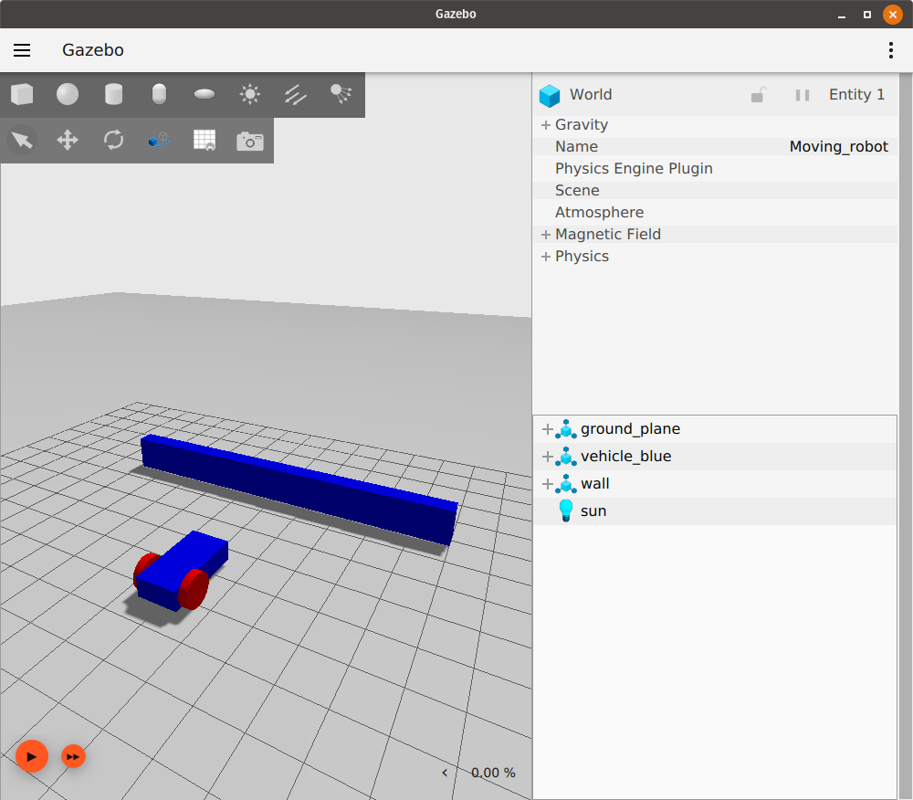

Sensors
참고: 이 튜토리얼은 Moving the robot tutorial의 연속입니다.
이 튜토리얼에서는 로봇 및 월드의 다른 모델에 센서를 추가하는 방법을 배웁니다. IMU 센서, 접촉 센서, Lidar 센서의 세 가지 다른 센서를 사용합니다. 또한 gz launch를 사용하여 단일 파일로 여러 작업을 시작하는 방법도 배웁니다.
이러한 모든 플러그인이 사용되는 이 튜토리얼의 최종 월드는 here에서 찾을 수 있습니다.
또한 개별 예제에 대해 가능한 많은 센서 및 작동 기능을 갖춘 광범위한 월드 예제 세트를 gz-sim/examples/worlds에서 찾을 수 있습니다.
전체 센서 세트는 gz-sensors library에서 찾을 수 있습니다.
ROS를 사용하는 경우 이러한 예제에 대한 데모 실행 및 브리징 구성은 here에서 볼 수 있습니다.
Preliminaries
현재 플러그인이 포함되지 않은 SDF 파일에 plugin을 추가할 때 기본 플러그인은 로드되지 않습니다. 센서를 추가하기 전에 GZ GUI를 계속 사용할 수 있도록 월드에 몇 가지 논리적 기본값을 추가해야 합니다.
<sdf version='1.9'>
<world name='demo'>
<plugin
filename="gz-sim-physics-system"
name="gz::sim::systems::Physics">
</plugin>
<plugin
filename="gz-sim-scene-broadcaster-system"
name="gz::sim::systems::SceneBroadcaster">
</plugin>
<!-- ... -->
IMU sensor
관성 측정 장치(IMU)는 로봇의 orientation을 쿼터니언으로, 세 축(X, Y, Z)의 angular_velocity를, 세 축의 linear_acceleration을 출력합니다. 우리의 moving_robot.sdf 월드를 사용하고 수정해 보겠습니다. 새 파일 sensor_tutorial.sdf를 만들고 moving_robot.sdf의 코드를 추가합니다.
IMU 센서를 정의하려면 <world> 태그 아래에 이 코드를 추가합니다.
<plugin filename="gz-sim-imu-system"
name="gz::sim::systems::Imu">
</plugin>
이 코드는 우리 월드에서 사용할 IMU 센서 플러그인을 정의합니다.
이제 다음과 같이 로봇에 IMU 센서를 추가할 수 있습니다.
<sensor name="imu_sensor" type="imu">
<always_on>1</always_on>
<update_rate>1</update_rate>
<visualize>true</visualize>
<topic>imu</topic>
</sensor>
센서는 일반적으로 모델의 링크 중 하나에 추가됩니다. 우리는 chassis 링크 아래에 추가했습니다.
태그를 설명해 보겠습니다.
<always_on>참이면 센서가 업데이트 속도에 따라 항상 업데이트됩니다.<update_rate>센서 데이터가 생성되는 빈도입니다.<visualize>참이면 센서가 GUI에 시각화됩니다.<topic>데이터가 게시되는 토픽의 이름입니다.<mean>평균값 (보통 0, 센서 노이즈의 중심)<stddev>표준편차 (센서 랜덤 노이즈 크기)<bias_mean>바이어스 평균 (센서에 항상 존재하는 고정 오차)<biad_stddev>바이어스의 표준편차 (시간마다 바이어스가 달라질 수 있는 정도)<dynamic_bias_stddev>시간에 따라 변화하는 바이어스의 표준편차<dynamic_bias_correlation_time>동적 바이어스의 시간 상관관계, 클수록 변화가 느림<precision>최소 분해능, 가장 작은 감지 가능한 단위
참고: 아직 모든 센서에 대해 모든 태그가 지원되는 것은 아닙니다.
Read data from IMU
IMU에서 데이터를 읽으려면 한 터미널에서 월드를 실행하고 재생 버튼을 누릅니다.
gz sim sensor_tutorial.sdf
다른 터미널에서 다음을 실행합니다.
gz topic -e -t /imu
마지막 명령은 /imu 토픽을 통해 전송되는 메시지를 수신합니다. IMU 데이터는 위에서 설명한 대로 orientation, angular_velocity 및 linear_acceleration입니다. 다음과 같이 보여야 합니다.

키보드 위쪽 화살표 키를 사용하여 로봇을 앞으로 이동합니다. 센서 값이 변경되는 것을 볼 수 있습니다.
Contact sensor
다른 유형의 센서인 contact 센서를 소개해 보겠습니다.
이름에서 알 수 있듯이 이 센서는 다른 물체와 접촉(접촉)할 때 표시를 제공합니다. 장애물(벽)을 만들고 여기에 접촉 센서를 추가합니다. 로봇이 장애물에 부딪히면 멈춰서 로봇이 손상되는 것을 방지합니다. 먼저 다음과 같이 장애물을 만듭니다.
<model name='wall'>
<static>true</static>
<pose>5 0 0 0 0 0</pose><!--pose relative to the world-->
<link name='box'>
<visual name='visual'>
<geometry>
<box>
<size>0.5 10.0 2.0</size>
</box>
</geometry>
<!--let's add color to our link-->
<material>
<ambient>0.0 0.0 1.0 1</ambient>
<diffuse>0.0 0.0 1.0 1</diffuse>
<specular>0.0 0.0 1.0 1</specular>
</material>
</visual>
<collision name='collision'>
<geometry>
<box>
<size>0.5 10.0 2.0</size>
</box>
</geometry>
</collision>
</link>
</model>
상자 모양의 링크가 하나 있는 간단한 모델입니다. 모델을 만드는 방법은 Build your own robot tutorial에서 확인할 수 있습니다.
이제 월드를 실행하고 시뮬레이션에서 벽이 다음과 같이 나타나는지 확인합니다.

벽에 접촉 센서를 추가해 보겠습니다. IMU 센서와 마찬가지로 먼저 다음 코드를 추가하여 Contact 센서를 정의해야 합니다.
<plugin filename="gz-sim-contact-system"
name="gz::sim::systems::Contact">
</plugin>
이제 wall 모델의 box 링크에 contact 센서를 추가할 수 있습니다.
<sensor name='sensor_contact' type='contact'>
<contact>
<collision>collision</collision>
</contact>
</sensor>
<sensor>의 정의는 간단하며 센서의 name과 type만 정의합니다. 그리고 collision 내부에는 collision인 상자 링크 충돌 이름을 정의합니다.
다음과 같이 wall 모델 아래에 TouchPlugin도 추가해야 합니다.
<plugin filename="gz-sim-touchplugin-system"
name="gz::sim::systems::TouchPlugin">
<target>vehicle_blue</target>
<namespace>wall</namespace>
<time>0.001</time>
<enabled>true</enabled>
</plugin>
TouchPlugin은 wall이 터치되면 메시지를 게시(전송)합니다. 플러그인의 태그는 다음과 같습니다.
<target>우리 벽과 접촉할 대상, 이 경우vehicle_blue입니다.<namespace>토픽의 네임스페이스를 사용하므로 로봇이 벽에 부딪히면/wall/touched토픽으로 메시지를 보냅니다.
한 터미널에서 월드를 실행합니다.
gz sim sensor_tutorial.sdf
다른 터미널에서 /wall/touched 토픽을 수신합니다.
gz topic -e -t /wall/touched
키보드 화살표 키를 사용하여 로봇을 벽 쪽으로 운전합니다. 재생 버튼을 눌러 시뮬레이션을 시작하고 플러그인 드롭다운 목록(세로 줄임표)을 클릭한 다음 "Key Publisher"를 선택하여 Key Publisher 플러그인도 활성화해야 합니다.
범프에 부딪히면 gz topic -e -t /wall/touched를 실행한 터미널에 data: true 메시지가 표시되어야 합니다.
이제 TriggeredPublisher 플러그인을 사용하여 로봇이 벽에 부딪힐 때 멈추도록 다음과 같이 할 수 있습니다.
<plugin filename="gz-sim-triggered-publisher-system"
name="gz::sim::systems::TriggeredPublisher">
<input type="gz.msgs.Boolean" topic="/wall/touched">
<match>data: true</match>
</input>
<output type="gz.msgs.Twist" topic="/cmd_vel">
linear: {x: 0.0}, angular: {z: 0.0}
</output>
</plugin>
Moving robot tutorial에서 설명했듯이 수신된 입력에 따라 출력을 게시할 수 있습니다. 따라서 /wall/touched 토픽에서 data: true를 수신하면 linear: {x: 0.0}, angular: {z: 0.0}을 게시하여 로봇을 멈춥니다.
Lidar sensor
로봇이 벽에 전혀 닿지 않기를 원합니다. 왜냐하면 이것은 약간의 손상을 일으킬 수 있기 때문입니다. 그래서 접촉 센서 대신 Lidar를 사용할 수 있습니다. Lidar는 "light detection and ranging"의 약자입니다. 이 센서는 로봇 주변의 장애물을 감지하는 데 도움이 될 수 있습니다. 우리는 이것을 사용하여 로봇과 벽 사이의 거리를 측정할 것입니다.
먼저 lidar를 고정할 프레임을 만듭니다. 이것은 lidar 프레임이 로봇의 chassis에 부착되므로 vehicle_blue <model> 태그 내부에 추가해야 합니다.
<frame name="lidar_frame" attached_to='chassis'>
<pose>0.8 0 0.5 0 0 0</pose>
</frame>
그런 다음 lidar 센서를 사용하려면 <world> 태그 아래에 이 플러그인을 추가합니다.
<plugin
filename="gz-sim-sensors-system"
name="gz::sim::systems::Sensors">
<render_engine>ogre2</render_engine>
</plugin>
chassis 링크 아래에 다음과 같이 lidar 센서를 추가할 수 있습니다.
<sensor name='gpu_lidar' type='gpu_lidar'>"
<pose relative_to='lidar_frame'>0 0 0 0 0 0</pose>
<topic>lidar</topic>
<update_rate>10</update_rate>
<ray>
<scan>
<horizontal>
<samples>640</samples>
<resolution>1</resolution>
<min_angle>-1.396263</min_angle>
<max_angle>1.396263</max_angle>
</horizontal>
<vertical>
<samples>1</samples>
<resolution>0.01</resolution>
<min_angle>0</min_angle>
<max_angle>0</max_angle>
</vertical>
</scan>
<range>
<min>0.08</min>
<max>10.0</max>
<resolution>0.01</resolution>
</range>
</ray>
<always_on>1</always_on>
<visualize>true</visualize>
</sensor>
- 센서의
name(이름)과type(유형)을 정의하고,<pose relative_to='lidar_frame'>을 사용하여lidar_frame에 상대적인 센서의 위치와 방향을 설정합니다. (참고: 예제에서는lidar_frame을 사용하지만, 일반적으로base_link와 같은 로봇의 기준 프레임에 상대적으로 정의합니다.) <topic>: Lidar 데이터가 게시될 토픽의 이름입니다.<update_rate>: 데이터 발행 주기(Hz)입니다. 예제에서는10Hz로,0.1초마다 데이터가 생성됩니다.<ray>: Lidar 광선과 관련된 설정을 포함하는 부모 태그입니다.<scan>: 스캔 패턴과 관련된 설정을 정의합니다.<horizontal>: 수평 스캔에 대한 설정을 정의합니다.<samples>: 수평 방향으로 스캔할 레이(광선)의 개수입니다.<resolution>: 수평 해상도 배율입니다. 일반적으로1로 설정되며, 이 경우<samples>값과 동일한 수의 데이터 포인트가 생성됩니다.<min_angle>및<max_angle>: 수평 스캔의 시작 각도와 끝 각도 (라디안 단위)입니다. 예를 들어, 예제의-1.396263rad에서1.396263rad는 약 ±80도에 해당합니다.
<vertical>: 수직 스캔에 대한 설정을 정의합니다. (2D Lidar의 경우, 수직 스캔은 단일 평면을 나타냅니다.)<samples>: 수직 방향으로 스캔할 레이의 개수입니다. 2D Lidar의 경우 보통1입니다.<resolution>: 수직 해상도 배율입니다.<min_angle>및<max_angle>: 수직 스캔의 시작 각도와 끝 각도 (라디안 단위)입니다. 2D Lidar의 경우 보통0으로 설정하여 단일 수평면을 스캔합니다.
<range>: 각 레이의 거리 측정 능력과 관련된 설정을 정의합니다.<min>: 센서가 감지할 수 있는 최소 거리 (미터 단위)입니다. 이보다 가까운 물체는 감지되지 않을 수 있습니다.<max>: 센서가 감지할 수 있는 최대 거리 (미터 단위)입니다. 이보다 먼 물체는 감지되지 않을 수 있습니다.<resolution>: 거리 측정값의 분해능 (미터 단위)입니다. 센서가 구분할 수 있는 최소 거리 변화량을 의미합니다.
<always_on>:true로 설정하면 센서가<update_rate>에 따라 항상 활성화되어 데이터를 생성합니다.false인 경우, 센서가 활성화되는 다른 메커니즘(예: 토픽 구독)이 필요할 수 있습니다.<visualize>:true로 설정하면 시뮬레이션 GUI에서 센서의 레이가 시각적으로 표시됩니다. 디버깅에 유용합니다.<noise>(선택 사항): 센서 데이터에 적용할 노이즈 모델을 정의합니다. 이를 통해 더 현실적인 센서 데이터를 시뮬레이션할 수 있습니다.<type>: 노이즈의 유형을 지정합니다 (예:gaussian은 가우시안 노이즈를 의미).<mean>: 노이즈 분포의 평균값입니다. 가우시안 노이즈의 경우 보통0.0입니다.<stddev>: 노이즈 분포의 표준 편차입니다. 값이 클수록 노이즈의 변동성이 커집니다.
<clip>(선택 사항): 센서의 렌더링 범위를 제한합니다. 주로 시각화 성능에 영향을 줄 수 있습니다.<near>: 이 값(미터 단위)보다 가까운 물체는 렌더링에서 제외될 수 있습니다.<far>: 이 값(미터 단위)보다 먼 물체는 렌더링에서 제외될 수 있습니다.
이제 월드를 실행하고 왼쪽 하단 모서리에 있는 재생 버튼을 누릅니다.
gz sim sensor_tutorial.sdf
/lidar 토픽의 lidar 메시지, 특히 ranges 데이터를 확인합니다.
gz topic -e -t /lidar
lidar 메시지에는 다음과 같은 속성이 있습니다.
message LaserScan
{
Header header = 1;
string frame = 2;
Pose world_pose = 3;
double angle_min = 4;
double angle_max = 5;
double angle_step = 6;
double range_min = 7;
double range_max = 8;
uint32 count = 9;
double vertical_angle_min = 10;
double vertical_angle_max = 11;
double vertical_angle_step = 12;
uint32 vertical_count = 13;
repeated double ranges = 14;
repeated double intensities = 15;
}
Avoid the wall
이제 로봇에 lidar가 있으므로 ranges 데이터를 사용하여 로봇이 벽에 부딪히는 것을 피할 수 있습니다.
이를 위해 센서 데이터를 수신하고 로봇에 속도 명령을 보내는 짧은 C++ 프로그램을 작성합니다.
이 프로그램은 노드라고 합니다. /lidar 토픽을 구독하고 해당 데이터를 읽는 노드를 빌드합니다.
publisher 및 subscriber 노드를 빌드하는 방법을 배우려면 이 tutorial을 참조하십시오.
이 데모용 완성된 노드는 here에서 다운로드할 수 있습니다.
The lidar_node
std::string topic_pub = "/cmd_vel";
gz::transport::Node node;
auto pub = node.Advertise<gz::msgs::Twist>(topic_pub);
cmd_vel 토픽에 게시할 node를 선언합니다. 그런 다음 노드를 광고합니다.
void cb(const gz::msgs::LaserScan &_msg)
{
gz::msgs::Twist data;
bool allMore = true;
for (int i = 0; i < _msg.ranges_size(); i++)
{
if (_msg.ranges(i) < 1.0)
{
allMore = false;
break;
}
}
if (allMore) //if all bigger than one
{
data.mutable_linear()->set_x(0.5);
data.mutable_angular()->set_z(0.0);
}
else
{
data.mutable_linear()->set_x(0.0);
data.mutable_angular()->set_z(0.5);
}
pub.Publish(data);
}
콜백 함수 내에서 모든 광선의 범위가 1.0보다 큰지 확인합니다.
그렇다면 자동차에 메시지를 게시하여 앞으로 이동합니다. 그렇지 않으면 로봇을 회전시킵니다.
int main(int argc, char **argv)
{
std::string topic_sub = "/lidar";
// Subscribe to a topic by registering a callback.
if (!node.Subscribe(topic_sub, cb))
{
std::cerr << "Error subscribing to topic [" << topic_sub << "]" << std::endl;
return -1;
}
// Zzzzzz.
gz::transport::waitForShutdown();
return 0;
}
main 내부에서 lidar 토픽을 구독하고 노드가 종료될 때까지 기다립니다.
Build the node
CMakeLists.txt를 다운로드하고 lidar_node와 동일한 폴더에 build/ 디렉토리를 만듭니다.
mkdir build
cd build
cmake를 실행하고 코드를 빌드합니다.
cmake ..
make lidar_node
Run the node
터미널 1에서 노드를 실행합니다.
./build/lidar_node
터미널 2에서 월드를 실행합니다.
gz sim sensor_tutorial.sdf
이제 로봇이 앞으로 움직이고 벽에 접근하면 왼쪽으로 회전하기 시작하여 장애물이 없어지면 다시 앞으로 움직이는 것을 볼 수 있습니다(로봇이 움직이기 시작하도록 왼쪽 하단 모서리에 있는 재생 버튼을 눌러야 합니다).
Gazebo launch
두 개의 다른 터미널에서 두 개의 다른 작업을 실행하는 대신 sensor_world와 lidar_node를 동시에 실행하는 launch 파일을 만들 수 있습니다. 텍스트 편집기를 열고 다음 코드를 추가합니다.
<?xml version='1.0'?>
<gz version='1.0'>
<executable name='sensor-world'>
<command>gz sim sensor_tutorial.sdf</command>
</executable>
<executable name='lidar_node'>
<command>./build/lidar_node</command>
</executable>
</gz>
launch 파일은 XML 파일입니다. <executable> 태그 아래에서 실행될 명령을 간단히 정의합니다.
첫 번째 명령은 월드를 시작하는 gz sim sensor_tutorial.sdf입니다.
그리고 두 번째 명령은 lidar_node를 실행하는 ./build/lidar_node입니다.
파일을 sensor_launch.gzlaunch로 저장한 다음 다음 명령을 사용하여 실행합니다.
gz launch sensor_launch.gzlaunch
시뮬레이션을 시작하려면 재생 버튼을 누릅니다. 만세! 이제 로봇이 움직이고 벽을 피하고 있습니다.
시뮬레이션에 복잡성을 더 추가하려면 next tutorial에서 월드에 액터를 추가하는 방법을 배우십시오.
Video walk-through
이 튜토리얼의 비디오 연습은 YouTube 채널에서 제공됩니다: Gazebo tutorials: Sensors